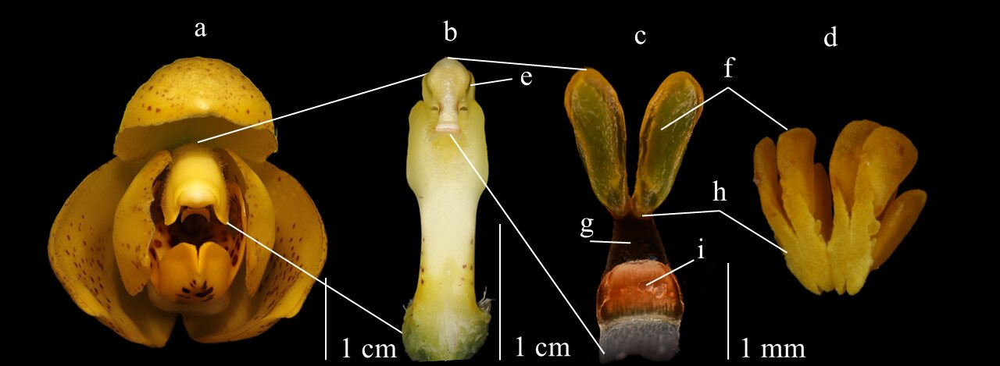

Orchid reproductive adhesives
Comparative study of viscidia and related reproductive adhesives across orchid genera, combining FTIR-ATR spectroscopy, morphology and contact-area-aware mechanical testing.
- Lipid, polysaccharide and intermediate adhesive classes.
- Thermally responsive and pressure-sensitive adhesive behaviour.
- Evolutionary diversification of orchid pollination materials.